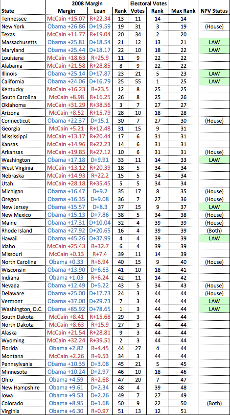

08.14.12
National Popular Vote States
I’m a big fan of the National Popular Vote Bill, which seeks to do away with the Electoral College without amending the Constitution. Here’s the three-sentence explanation from their web site:
Under the U.S. Constitution, the states have exclusive and plenary (complete) power to allocate their electoral votes, and may change their state laws concerning the awarding of their electoral votes at any time. Under the National Popular Vote bill, all of the state’s electoral votes would be awarded to the presidential candidate who receives the most popular votes in all 50 states and the District of Columbia. The bill would take effect only when enacted, in identical form, by states possessing a majority of the electoral votes—that is, enough electoral votes to elect a President (270 of 538).
Intuitively, you’d expect this bill to be popular in states with:
- Large populations
- Very predictable voting patterns
These are the states like California and Texas which are large, but completely neglected under the current presidential voting system. Putting on our Nate Silver hat, we can try to quantify this. A state is large if it has lots of Electoral Votes. A state has predictable voting patterns if it differed considerably from the national popular vote in the last election. A state should support the NPV bill if it ranks highly in both of these senses:

For example, California ranks #1 in Electoral Votes (it has 55). It voted for Obama by a margin of 24% in 2008. The nation as a whole voted for Obama by a margin of 7%, so we say that California leans Democratic by 17%. Amongst all states, this is the 25th largest lean. California’s score is the larger of these two numbers (25). Repeat this analysis for all 50 states and the District of Columbia and you’ll get the chart above.
It’s not surprising to see California, Texas and New York near the top of the list. These are the three largest states, but they do not factor into presidential elections at all. Tennessee surprised me at the top of the list, but with 11 EVs and a 20+ point Republican lean, it would clearly benefit from a change in the system.
If the top three states in this list (Tennessee, Texas, New York) all passed the NPV bill, it would have 210 of the 270 EVs it needs to go into effect. Were that to happen, I believe we’d start to hear a lot more about it in the media.
Raw data here (Excel format). For what it’s worth, I now understand why Nate uses images for the tables on his blog: getting a formatted table out of Excel in any other format is nearly impossible!